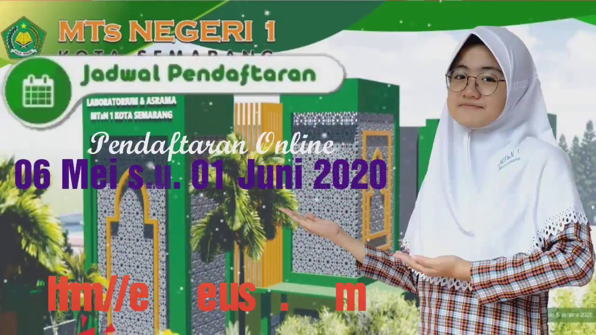
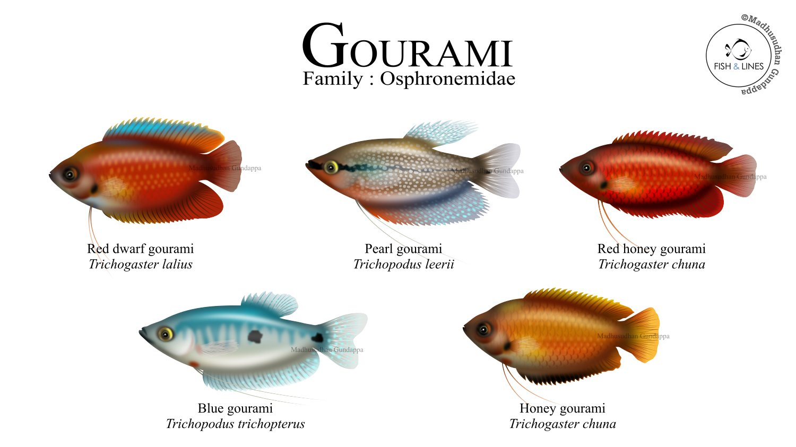
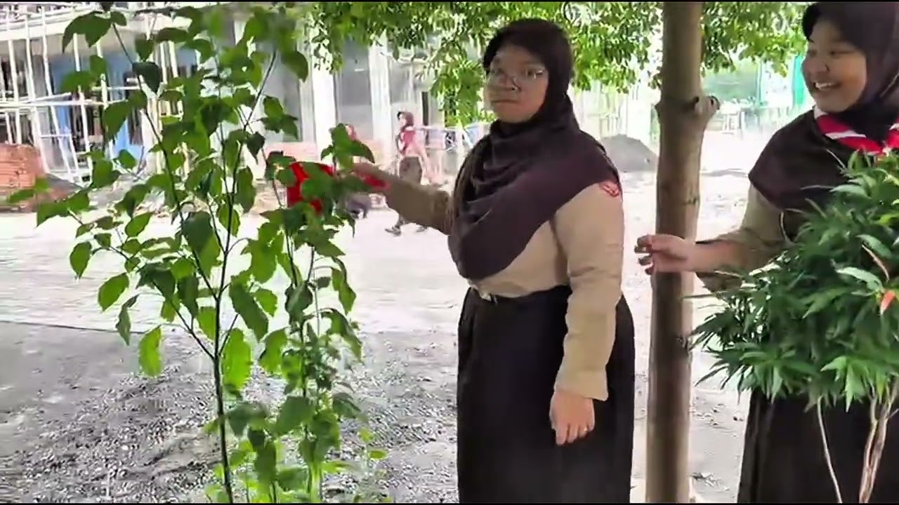

Mengapa Memilih MTs Negeri 1
Alasan keluarga mempercayakan pendidikan putra-putrinya kepada kami.
Pengakuan Nasional
Akreditasi A dan madrasah negeri yang menjamin mutu pendidikan secara resmi.
Pendidik Berdedikasi
Guru profesional dan berkomitmen mendampingi setiap peserta didik secara personal.
Pondasi Qur'ani
Karakter Islami dan hafalan Al-Qur'an yang dikembangkan setiap hari dalam keseharian.
Keterampilan Abad 21
Riset, sains, dan literasi digital yang membekali siswa untuk masa depan.
Fasilitas Modern
Sarana belajar, laboratorium, masjid, dan asrama yang nyaman serta aman.
Islami & Inklusif
Lingkungan aman dan penuh kasih yang menghargai keunikan setiap anak.
Sambutan Kepala Madrasah
Assalamu'alaikum Warahmatullahi Wabarakatuh
Selamat datang di website resmi MTs Negeri 1 Kota Semarang. Kami bersyukur ke hadirat Allah SWT atas segala nikmat dan karunia-Nya, sehingga website ini dapat hadir sebagai media informasi, publikasi, dan layanan bagi seluruh warga madrasah, orang tua, serta masyarakat luas.
MTs Negeri 1 Kota Semarang terus berbenah dan berkomitmen menjadi madrasah yang hebat dan bermartabat. Melalui program unggulan tahfidz, riset, dan sains, kami mendidik peserta didik dengan pendidikan ala pesantren, menanamkan nilai-nilai keislaman, serta membekali keterampilan abad 21 agar siap menghadapi tantangan zaman.
Kami mengucapkan terima kasih atas dukungan dan kepercayaan masyarakat. Mari bersama wujudkan generasi Qur'ani yang cerdas, berakhlak mulia, dan berprestasi.
Kepala Madrasah
H. Kasturi, S.Ag., M.Pd.
Bersama, kita wujudkan generasi Qur'ani yang cerdas, berakhlak mulia, dan berprestasi.
— Kepala Madrasah H. Kasturi, S.Ag., M.Pd.Pengumuman Madrasah
Informasi dan pemberitahuan terbaru untuk warga madrasah, orang tua, dan masyarakat.
PPDB Tahun Pelajaran 2027/2028 Segera Dibuka
Informasi jadwal, kuota, dan jalur pendaftaran akan diumumkan panitia PPDB madrasah. Mohon pantau terus laman ini.
Penerimaan Santri Baru "Idzatun Nasyi'in"
Pendaftaran santri baru boarding school dibuka dengan kapasitas 100 santri putra dan 100 santriwati.
Pembagian Rapor & Libur Semester Ganjil TP 2026/2027
Pembagian rapor dilaksanakan oleh wali kelas masing-masing; jadwal rinci diumumkan melalui wali kelas.
Kunjungan Belajar Teknik Audio & Video ke TVRI Jateng
Peserta didik mengikuti kunjungan belajar teknik audio dan video ke TVRI Stasiun Jawa Tengah.
Tiga Pilar Keunggulan Madrasah
Program unggulan yang menjadi daya tarik dan ciri khas MTs Negeri 1 Kota Semarang.
Tahfidzul Qur'an
Pembinaan hafalan Al-Qur'an dengan metode terstruktur, didampingi pengasuh, serta kajian kitab kuning (Mabadiul Fiqhiyah, Hidatul Mustafid, Alala, dan lainnya).
Riset
Pelatihan penelitian ilmiah dan pendalaman materi sains, dengan bimbingan khusus untuk persiapan mengikuti kompetisi tingkat kota, nasional, hingga internasional.
Sains
Penguatan kompetensi sains melalui pembelajaran aktif, praktikum, dan olimpiade — terbukti melalui prestasi di Kompetisi Sains Madrasah (KSM) hingga tingkat provinsi.
Cerita, Berita & Prestasi
Kabar dan capaian MTs Negeri 1 Kota Semarang dari berbagai kegiatan.

Peserta Didik Lolos Seleksi U-15 Timnas Indonesia
Salah satu peserta didik kelas IX lolos seleksi U-15 Timnas Indonesia dan bersiap menuju Portugal.
6 Sep 2023 · Nasional
132 Medali dari 10 Ajang Kompetisi
Putra-putri terbaik madrasah menyumbangkan 132 medali dalam 10 macam perlombaan olimpiade dan sains.
29 Mar 2022 · NasionalGedung SBSN Diresmikan Menteri Agama
Gedung baru madrasah yang dibangun lewat skema SBSN diresmikan untuk menunjang kegiatan belajar.
8 Feb 2022 · FasilitasMedali Perak Riset Internasional (RARE ICON)
Riset pasta gigi dari kulit jeruk keprok meraih medali perak tingkat internasional pada RARE ICON 2022.
4 Jun 2022 · InternasionalJuara 1 LCTP Pramuka Tingkat Kwartir
Tim pramuka madrasah meraih juara pertama Lomba Cepat Tepat Pramuka tingkat kwartir.
11 Jun 2022 · Kwartir
Alumni Diterima di MAN Insan Cendekia & MAN PK
Peserta didik diterima di MAN Insan Cendekia (Pekalongan, Pasuruan) dan MAN Program Keagamaan Surakarta.
25 Mar 2022 · AlumniSumber berita: Kanwil Kementerian Agama Provinsi Jawa Tengah (jateng.kemenag.go.id).
Dari Semarang, Berkarya di Panggung Dunia
Jejaring prestasi dan kesempatan global untuk peserta didik — dari kompetisi internasional hingga melanjutkan studi di sekolah unggulan.
Riset Internasional
Medali perak RARE ICON (IFPRI) 2022 — riset pasta gigi kulit jeruk keprok.
Lihat Prestasi →Kolaborasi ASEAN
13C Challenge — MIICA Malaysia 2025: kolaborasi kreatif lintas negara.
Pelajari Program →Kompetisi Nasional
Kompetisi Sains Madrasah (KSM) hingga tingkat provinsi dan nasional.
Lihat Prestasi →Lanjutan Studi Gemilang
Alumni berhasil melaju ke MAN Insan Cendekia, MA/SMA unggulan, dan pesantren ternama.
Mulai Perjalanan →Galeri Kegiatan
Potret suasana dan aktivitas di lingkungan MTs Negeri 1 Kota Semarang.
Apa Kata Mereka
Pengalaman wali murid, alumni, dan santri bersama MTs Negeri 1 Kota Semarang.
Guru & Tenaga Kependidikan
Tenaga pendidik profesional dan berdedikasi dalam mendampingi peserta didik.
H. Kasturi, S.Ag., M.Pd.
Kepala Madrasah
Fikih & KeagamaanM. Fajar Anshari
Kepala Boarding School
Pembina AsramaSaptono
Pembina Pramuka
Ka. Gudep PutraAgus Prapto Sukoco
Guru Seni & Paduan Suara
Pelatih SeniAgus Trisnoto
Guru Seni & Paduan Suara
Pelatih SeniFoto dan nama tenaga pendidik lainnya sedang dalam proses validasi data resmi madrasah.
Pertanyaan yang Sering Ditanyakan
Jawaban cepat seputar PPDB, tahfidz, boarding, dan program unggulan.
Pendaftaran melalui jalur resmi yang diumumkan panitia PPDB pada laman PPDB. Pantau jadwal, kuota, dan berkas persyaratan TP 2026/2027.
Ya. Tahfidzul Qur'an adalah program unggulan yang dibina terstruktur, dilengkapi kajian kitab kuning dan pendampingan pengasuh.
Asrama dikelola mandiri dengan pendidikan ala pesantren — hafalan Al-Qur'an, kajian kitab, pembinaan karakter harian. Kapasitas 100 santri putra + 100 santriwati.
Riset dan Sains — pembinaan kompetisi dari tingkat kota hingga internasional, termasuk KSM dan riset internasional.